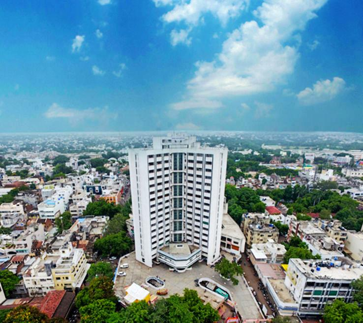
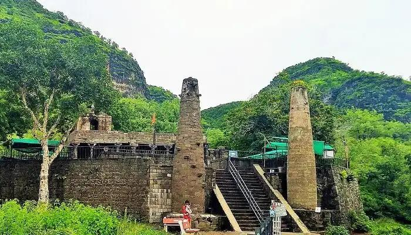
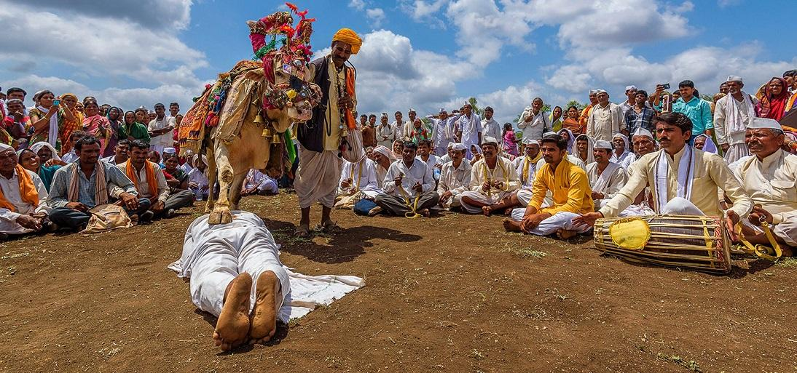
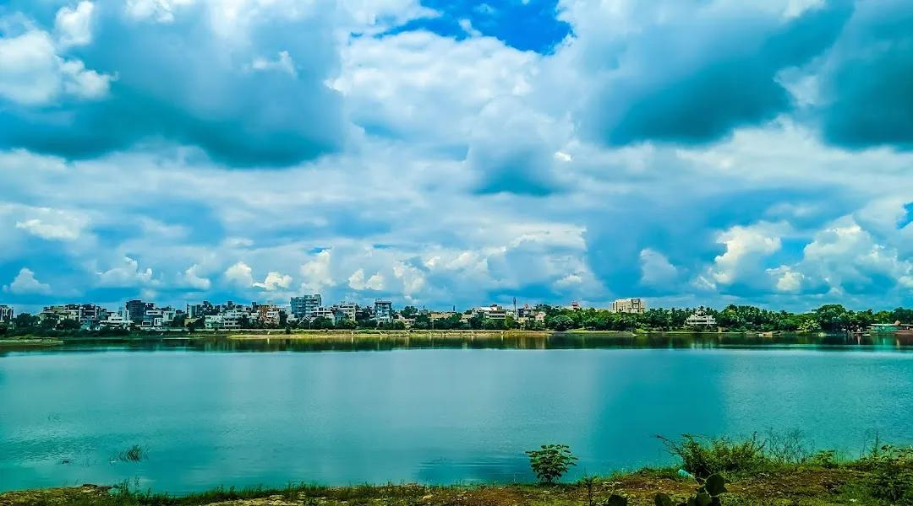
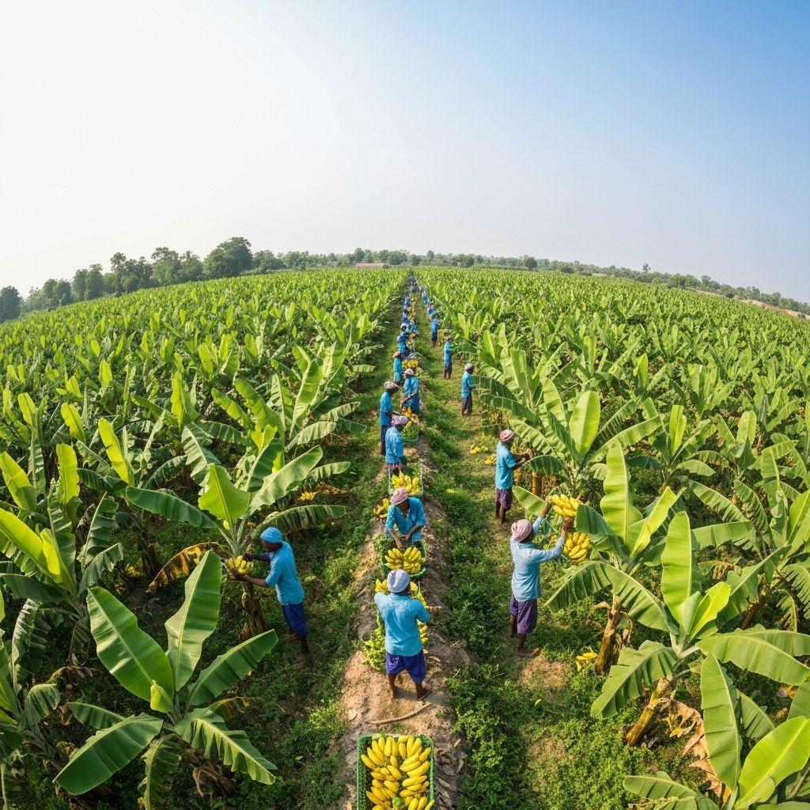
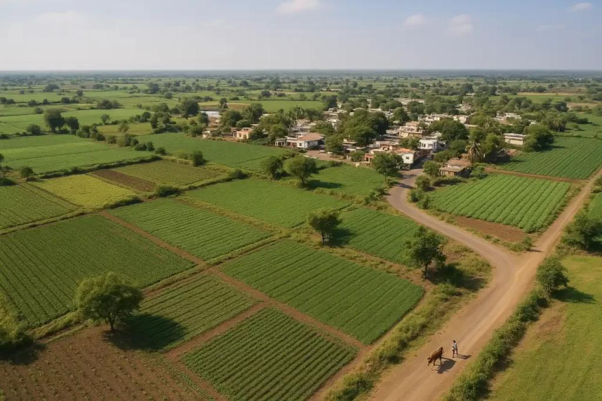
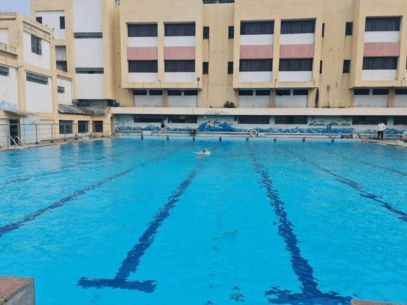

About

Jalgaon is the administrative headquarters of the Jalgaon district. Framed by the grand Satpuda mountains in the north and the Ajanta range in the south, the city sits in the fertile Tapi River valley. It is widely recognized as "Golden City" for its flourishing gold and jewelry markets and as the "Banana City" due to its massive banana cultivation.
- Location: On the Tapi and Narmada Rivers, about 420 km northeast of Mumbai. It sits right on the border where Maharashtra meets Gujarat.
- Famous as:The "Adivasi (Tribal) Capital" of Maharashtra, known for the scenic Toranmal Hill Station, ancient tribal culture, and the holy Narmada Parikrama pilgrimage route.
History

Historically known as East Khandesh, the region boasts an ancient past with Stone Age tools discovered along the Tapi and Girna rivers. Over centuries, it was ruled by the Mauryas, Satavahanas, Mughals, and Marathas. During the colonial era, it grew into a prominent railway junction and textile center, and in 1960, it was officially incorporated into the newly formed state of Maharashtra.
- Ancient Roots: Thrived under the Maurya, Satavahana, Vakataka, and Chalukya empires.
- Key Rulers: The Rashtrakutas, the Yadavas of Devagiri, the Nizams, the Maratha Empire, and the British Raj.
- Historic Sites: The world-famous Ajanta Caves (located just on the border), Parola Fort (linked to the Rani of Jhansi), the ancient Patnadevi Temple, and the Changdeo Maharaj Temple where the Tapi and Purna rivers meet.
Culture

The culture of Jalgaon is a vibrant blend of historical influences and traditional Marathi heritage. While Marathi is the primary language, the local Ahirani dialect is widely spoken and celebrated in folklore. The region has a rich literary and freedom-struggle history, famously associated with the legendary poetess Bahinabai Chaudhari and revolutionary social figures like Sane Guruji
- Main Festivals: Ganesh Utsav, Diwali, Holi, and the grand Sri Rama Rathotsav chariot festival.
- Traditional Arts:Ahirani folk songs, traditional Khandeshi pottery, and lively Lavani dance performances.
- Language: Marathi and Ahirani (the regional Khandeshi dialect), along with Hindi and Marwari.
Tourism

Jalgaon is the perfect gateway to several iconic landmarks, most notably the world-famous Ajanta Caves, which are located nearby. The district also houses a variety of religious and historical attractions, including the ancient Patnadevi (near Chalisgaon), the scenic Manudevi Temple, and the historically significant Parola Fort.
- Ajanta Caves - Buddhist rock-cut caves, UNESCO world heritage, ancient frescoes.
- Patnadevi Temple - Hemadpanthi architecture, Gautala sanctuary, ancient mathematics center.
- Parola Fort - Rani Laxmibai, historic fortification, defensive trenches.
Famous Food

The culinary scene in Jalgaon reflects robust, traditional Khandeshi flavors. Local staples include Bajra (pearl millet) rotis and spicy, vegetarian preparations. Signature regional dishes include Khandeshi Rassa (a fiery mutton or vegetarian curry), Baingan Bharta, and Shev Bhaji. Meals are frequently accompanied by sweet, locally grown bananas or treats like Puran Poli.
- Famous dishes:Khandeshi Baingan Bharta (smoky mashed eggplant), Shev Bhaji (spicy noodle curry), and Mutton Rassa (fiery meat gravy).
- Local Specialty: Jalgaon Bananas (sweet fruit with an official GI tag), Bharit Brinjals (giant green eggplants), and Urad Dal Jalebi (crisp, unique black gram sweets).
Economy

The economy of Jalgaon thrives on a strong trifecta of agriculture, industry, and commerce. It is renowned globally for its advanced irrigation technologies, with pioneering companies like Jain Irrigation Systems headquartered there. The city is a major producer of cotton, pulses, and bananas, in addition to being a powerhouse for vegetable oils, bio-fertilizers, and gold trading
- Key Industries: Jain Irrigation Systems (drip irrigation), massive gold refining and jewelry markets, and heavy cotton textile mills.
- Main Crops:GI-tagged Jalgaon Bananas (over 70% of state production), premium white cotton, jowar (sorghum), and sweet lime.
Environment

Jalgaon features a hot, semi-arid climate dictated by the rain shadow of the Western Ghats. It experiences three distinct seasons: sweltering summers with temperatures sometimes exceeding 45°C, a moderate monsoon season (averaging 690 mm of rainfall), and dry, pleasant winters. The region's fertile black volcanic soil is the primary driver of its agricultural prosperity.
- Climate:Type: Tropical semi-arid climate, extremely hot summers frequently exceeding 45°C, moderate monsoon rains (June to September), and dry, mild winters.
- Key Rivers:The Tapi River and the Girna River form the main river basin, with smaller lifelines like the Purna, Anjani, and Bori rivers.
- Protected Areas:Gautala Autramghat Sanctuary and Yawal Wildlife Sanctuary, which sit in the Satpuda hills and shelter leopards, barking deer, wild boars, and jungle cats.
Sports

Sports and recreation are an integral part of community life in Jalgaon. Traditional Indian sports like Kabaddi and Kho-Kho are highly popular across rural and urban areas. The city also has active participation in cricket, with local facilities and clubs hosting district-level tournaments that foster local talent.
- Traditional Sports: Kabaddi, Kho-Kho, and traditional clay-pit wrestling (Kushti) heavily dominate the youth sporting culture in both rural and urban areas.
- Focus: Main venues include the Eklavya Sports Complex and Chatrapati Shivaji Maharaj Stadium. The athletic focus is on building modern synthetic tracks, nurturing state-level archery and hockey players, and hosting inter-district cricket tournaments.